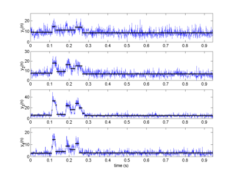

Joint segmentation of multivariate astronomical data
Astronomy and other sciences often face the problem of detecting and characterizing structure in two or more related time series. This work approaches such problems using Bayesian priors to represent relationships between signals with various degrees of certainty, and not just rigid constraints. The segmentation is conducted by using a hierarchical Bayesian approach to a piecewise constant Poisson rate model. A Gibbs sampling strategy allows joint estimation of the unknown parameters and hyperparameters.
The joint segmentation procedure and the main results are detailed in a paper published in IEEE Trans. Signal Processing in 2007.
- article
 [ .pdf - 687Ko ].
[ .pdf - 687Ko ].
The corresponding Matlab codes are available below.
- matlab codes
 [ .tar - 30Ko ].
[ .tar - 30Ko ].
Synthetic data
The accuracy of the proposed abundance estimation procedure is illustrated by segmenting jointly two time series. The animation (175 frames) available below illustrates the convergence assessment of the proposed algorithm. It represents the successive MMSE estimates of the posterior distributions of the changepoint locations provided by the procedure during the segmentation of the data used in a paper presented at EUSIPCO'06 as functions of time.
- mpg file
 [ .mpg - 367Ko ].
[ .mpg - 367Ko ].
Posterior probability of rupture as function of the number of MCMC iterations.
Real data: NASA Compton Gamma Ray Observatory's BATSE
Times of arrival of the photons are recorded by the BATSE sensor (Fig. 2) embedded on the Gamma Ray Observatory (GRO) from NASA (Fig. 1.). By the nature of this photon-counting experiment, the time series can be accurately modeled as Poisson processes. The Poisson rate parameter varies as determined by the actual changes in brightness of the gamma-ray burst (GRB) source. The intensity of the GRB as a function of time often consists of a series of short-time-scale structures, called pulses. The goal of the analysis is to determine parameters such as the rise and decay times of the pulses, and other quantities that can be derived from a piecewise-constant representation.
Fig. 1. BATSE module.
Fig. 2. GRO observatory.
The hierarchical method presented has been applied to a real astronomical data set. The results depicted in Fig.3 and Fig. 4 are provided by the 1-D and joint segmentation procedures respectively. These results has been reported in the paper published in IEEE Transactions on Signal Processing.
Fig. 3. Posterior distribution of the change-point locations (1-D astronomical data).

Fig. 4. Block representation of the segmented time series (4-D astronomical data).